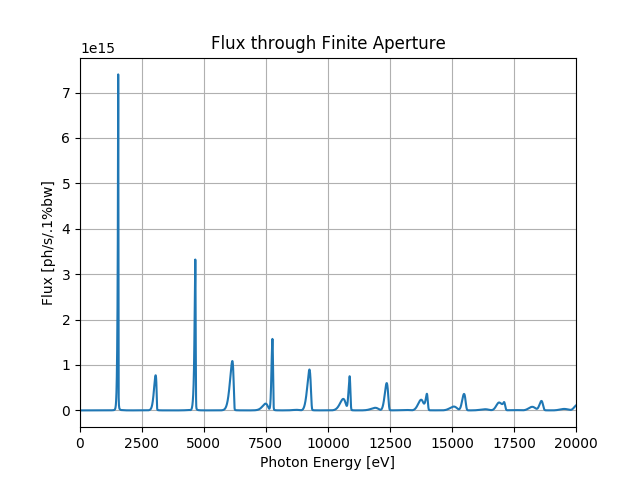
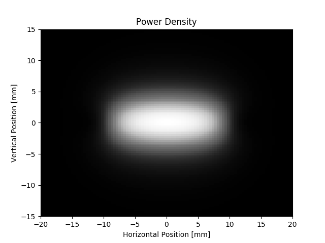
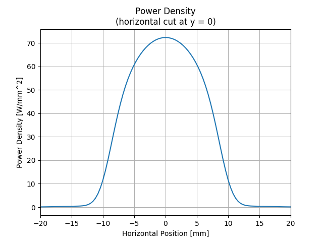
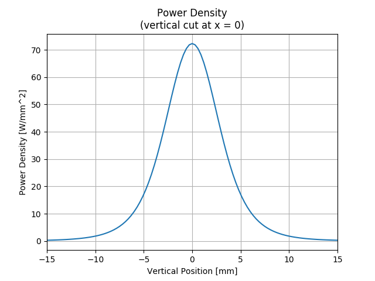

Note
Click here to download the full example code
SRW Example #6¶
Problem¶
Calculating spectral flux of undulator radiation by finite-emittance electron beam collected through a finite aperture and power density distribution of this radiation (integrated over all photon energies)
Example Solution¶
- 
- 
- 
- 
Out:
SRWLIB Extended Example # 6:
Calculating spectral flux of undulator radiation by finite-emittance electron beam collected through a finite aperture and power density distribution of this radiation (integrated over all photon energies)
Performing Spectral Flux (Stokes parameters) calculation ... done
Performing Power Density calculation (from field) ... done
Saving intensity data to file ... done
Plotting the results (blocks script execution; close any graph windows to proceed) ... done
from __future__ import print_function #Python 2.7 compatibility
from srwpy.srwlib import *
from srwpy.uti_plot import *
import os
import sys
print('SRWLIB Extended Example # 6:')
print('Calculating spectral flux of undulator radiation by finite-emittance electron beam collected through a finite aperture and power density distribution of this radiation (integrated over all photon energies)')
#**********************Input Parameters:
strExDataFolderName = 'data_example_06' #example data sub-folder name
strFluxOutFileName = 'ex06_res_flux.dat' #file name for output UR flux data
strPowOutFileName = 'ex06_res_pow.dat' #file name for output power density data
strTrjOutFileName = 'ex06_res_trj.dat' #file name for output trajectory data
#***********Undulator
harmB = SRWLMagFldH() #magnetic field harmonic
harmB.n = 1 #harmonic number
harmB.h_or_v = 'v' #magnetic field plane: horzontal ('h') or vertical ('v')
harmB.B = 1. #magnetic field amplitude [T]
und = SRWLMagFldU([harmB])
und.per = 0.02 #period length [m]
und.nPer = 150 #number of periods (will be rounded to integer)
magFldCnt = SRWLMagFldC([und], array('d', [0]), array('d', [0]), array('d', [0])) #Container of all magnetic field elements
#***********Electron Beam
eBeam = SRWLPartBeam()
eBeam.Iavg = 0.5 #average current [A]
eBeam.partStatMom1.x = 0. #initial transverse positions [m]
eBeam.partStatMom1.y = 0.
eBeam.partStatMom1.z = 0. #initial longitudinal positions (set in the middle of undulator)
eBeam.partStatMom1.xp = 0 #initial relative transverse velocities
eBeam.partStatMom1.yp = 0
eBeam.partStatMom1.gamma = 3./0.51099890221e-03 #relative energy
sigEperE = 0.00089 #relative RMS energy spread
sigX = 33.33e-06 #horizontal RMS size of e-beam [m]
sigXp = 16.5e-06 #horizontal RMS angular divergence [rad]
sigY = 2.912e-06 #vertical RMS size of e-beam [m]
sigYp = 2.7472e-06 #vertical RMS angular divergence [rad]
#2nd order stat. moments:
eBeam.arStatMom2[0] = sigX*sigX #<(x-<x>)^2>
eBeam.arStatMom2[1] = 0 #<(x-<x>)(x'-<x'>)>
eBeam.arStatMom2[2] = sigXp*sigXp #<(x'-<x'>)^2>
eBeam.arStatMom2[3] = sigY*sigY #<(y-<y>)^2>
eBeam.arStatMom2[4] = 0 #<(y-<y>)(y'-<y'>)>
eBeam.arStatMom2[5] = sigYp*sigYp #<(y'-<y'>)^2>
eBeam.arStatMom2[10] = sigEperE*sigEperE #<(E-<E>)^2>/<E>^2
#***********Precision Parameters
arPrecF = [0]*5 #for spectral flux vs photon energy
arPrecF[0] = 1 #initial UR harmonic to take into account
arPrecF[1] = 21 #final UR harmonic to take into account
arPrecF[2] = 1.5 #longitudinal integration precision parameter
arPrecF[3] = 1.5 #azimuthal integration precision parameter
arPrecF[4] = 1 #calculate flux (1) or flux per unit surface (2)
arPrecP = [0]*5 #for power density
arPrecP[0] = 1.5 #precision factor
arPrecP[1] = 1 #power density computation method (1- "near field", 2- "far field")
arPrecP[2] = 0 #initial longitudinal position (effective if arPrecP[2] < arPrecP[3])
arPrecP[3] = 0 #final longitudinal position (effective if arPrecP[2] < arPrecP[3])
arPrecP[4] = 20000 #number of points for (intermediate) trajectory calculation
#***********UR Stokes Parameters (mesh) for Spectral Flux
stkF = SRWLStokes() #for spectral flux vs photon energy
stkF.allocate(10000, 1, 1) #numbers of points vs photon energy, horizontal and vertical positions
stkF.mesh.zStart = 30. #longitudinal position [m] at which UR has to be calculated
stkF.mesh.eStart = 10. #initial photon energy [eV]
stkF.mesh.eFin = 20000. #final photon energy [eV]
stkF.mesh.xStart = -0.0015 #initial horizontal position [m]
stkF.mesh.xFin = 0.0015 #final horizontal position [m]
stkF.mesh.yStart = -0.00075 #initial vertical position [m]
stkF.mesh.yFin = 0.00075 #final vertical position [m]
stkP = SRWLStokes() #for power density
stkP.allocate(1, 101, 101) #numbers of points vs horizontal and vertical positions (photon energy is not taken into account)
stkP.mesh.zStart = 30. #longitudinal position [m] at which power density has to be calculated
stkP.mesh.xStart = -0.02 #initial horizontal position [m]
stkP.mesh.xFin = 0.02 #final horizontal position [m]
stkP.mesh.yStart = -0.015 #initial vertical position [m]
stkP.mesh.yFin = 0.015 #final vertical position [m]
#stkPx = SRWLStokes() #for power density
#stkPx.allocate(1, 101, 1) #numbers of points vs horizontal and vertical positions (photon energy is not taken into account)
#stkPx.mesh.zStart = stkP.mesh.zStart #longitudinal position [m] at which power density has to be calculated
#stkPx.mesh.xStart = stkP.mesh.xStart #initial horizontal position [m]
#stkPx.mesh.xFin = stkP.mesh.xFin #final horizontal position [m]
#stkPx.mesh.yStart = 0 #initial vertical position [m]
#stkPx.mesh.yFin = 0 #final vertical position [m]
#stkPy = SRWLStokes() #for power density
#stkPy.allocate(1, 1, 101) #numbers of points vs horizontal and vertical positions (photon energy is not taken into account)
#stkPy.mesh.zStart = stkP.mesh.zStart #longitudinal position [m] at which power density has to be calculated
#stkPy.mesh.xStart = 0 #initial horizontal position [m]
#stkPy.mesh.xFin = 0 #final horizontal position [m]
#stkPy.mesh.yStart = stkP.mesh.yStart #initial vertical position [m]
#stkPy.mesh.yFin = stkP.mesh.yFin #final vertical position [m]
#sys.exit(0)
#**********************Calculation (SRWLIB function calls)
print(' Performing Spectral Flux (Stokes parameters) calculation ... ', end='')
srwl.CalcStokesUR(stkF, eBeam, und, arPrecF)
print('done')
#partTraj = SRWLPrtTrj() #defining auxiliary trajectory structure
#partTraj.partInitCond = eBeam.partStatMom1
#partTraj.allocate(20001)
#partTraj.ctStart = -1.6 #Start Time for the calculation
#partTraj.ctEnd = 1.6
#partTraj = srwl.CalcPartTraj(partTraj, magFldCnt, [1])
#print(' Performing Power Density calculation (from trajectory) ... ', end='')
#srwl.CalcPowDenSR(stkP, eBeam, partTraj, 0, arPrecP)
#print('done')
print(' Performing Power Density calculation (from field) ... ', end='')
srwl.CalcPowDenSR(stkP, eBeam, 0, magFldCnt, arPrecP)
#srwl.CalcPowDenSR(stkPx, eBeam, 0, magFldCnt, arPrecP)
#srwl.CalcPowDenSR(stkPy, eBeam, 0, magFldCnt, arPrecP)
print('done')
#**********************Saving results
#print(' Saving trajectory data to file ... ', end='')
#partTraj.save_ascii(os.path.join(os.getcwd(), strExDataFolderName, strTrjOutFileName))
#print('done')
print(' Saving intensity data to file ... ', end='')
srwl_uti_save_intens_ascii(stkF.arS, stkF.mesh, os.path.join(os.getcwd(), strExDataFolderName, strFluxOutFileName), 0, ['Photon Energy', '', '', 'Flux'], _arUnits=['eV', '', '', 'ph/s/.1%bw'])
srwl_uti_save_intens_ascii(stkP.arS, stkP.mesh, os.path.join(os.getcwd(), strExDataFolderName, strPowOutFileName), 0, ['', 'Horizontal Position', 'Vertical Position', 'Power Density'], _arUnits=['', 'm', 'm', 'W/mm^2'])
print('done')
#**********************Plotting results (requires 3rd party graphics package)
print(' Plotting the results (blocks script execution; close any graph windows to proceed) ... ', end='')
uti_plot1d(stkF.arS, [stkF.mesh.eStart, stkF.mesh.eFin, stkF.mesh.ne], ['Photon Energy [eV]', 'Flux [ph/s/.1%bw]', 'Flux through Finite Aperture'])
plotMeshX = [1000*stkP.mesh.xStart, 1000*stkP.mesh.xFin, stkP.mesh.nx]
plotMeshY = [1000*stkP.mesh.yStart, 1000*stkP.mesh.yFin, stkP.mesh.ny]
uti_plot2d(stkP.arS, plotMeshX, plotMeshY, ['Horizontal Position [mm]', 'Vertical Position [mm]', 'Power Density'])
#uti_plot1d(stkPx.arS, plotMeshX, ['Horizontal Position [mm]', 'Power Density [W/mm^2]', 'Power Density cut at y = 0'])
#uti_plot1d(stkPy.arS, plotMeshY, ['Vertical Position [mm]', 'Power Density [W/mm^2]', 'Power Density cut at x = 0'])
powDenVsX = array('f', [0]*stkP.mesh.nx)
for i in range(stkP.mesh.nx): powDenVsX[i] = stkP.arS[stkP.mesh.nx*int(stkP.mesh.ny*0.5) + i]
uti_plot1d(powDenVsX, plotMeshX, ['Horizontal Position [mm]', 'Power Density [W/mm^2]', 'Power Density\n(horizontal cut at y = 0)'])
powDenVsY = array('f', [0]*stkP.mesh.ny)
for i in range(stkP.mesh.ny): powDenVsY[i] = stkP.arS[int(stkP.mesh.nx*0.5) + i*stkP.mesh.ny]
uti_plot1d(powDenVsY, plotMeshY, ['Vertical Position [mm]', 'Power Density [W/mm^2]', 'Power Density\n(vertical cut at x = 0)'])
uti_plot_show() #show all graphs (blocks script execution; close all graph windows to proceed)
print('done')
Total running time of the script: ( 0 minutes 4.563 seconds)